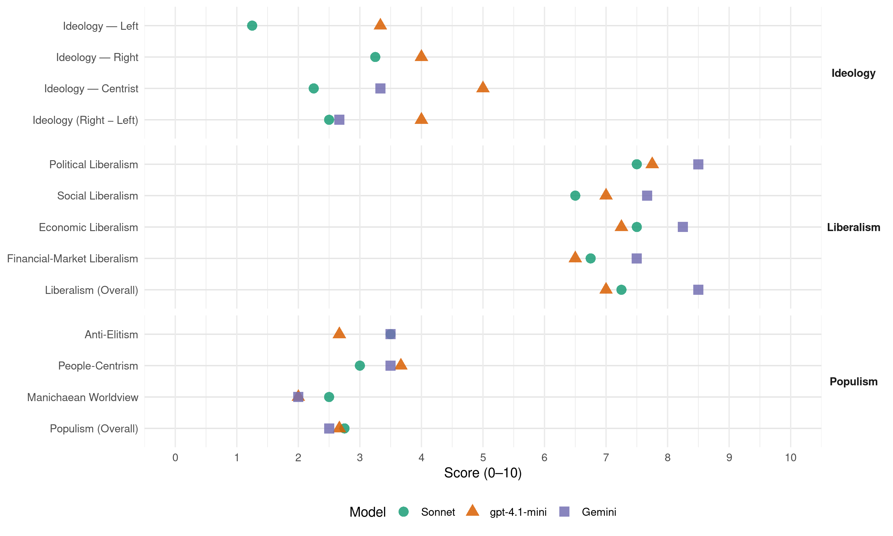

PP (Spain, 1989)
manifesto_id 33610_198910
Get full text: This site shows derived annotations and short verbatim quotes only. The full manifesto text is © Manifesto Project / WZB — obtain it via manifesto-project.wzb.eu using the manifesto_id above.
Headline scores
| Dimension | Sonnet | gpt-4.1-mini | Gemini |
|---|---|---|---|
| Populism (Overall) | 2.8 | 2.7 | 2.5 |
| Anti-Elitism | 3.5 | 2.7 | 3.5 |
| People-Centrism | 3.0 | 3.7 | 3.5 |
| Manichaean Worldview | 2.5 | 2.0 | 2.0 |
| Ideology (Right − Left) | 2.5 | 4.0 | 2.7 |
| Liberalism (Overall) | 7.2 | 7.0 | 8.5 |
| Political Liberalism | 7.5 | 7.8 | 8.5 |
| Social Liberalism | 6.5 | 7.0 | 7.7 |
| Economic Liberalism | 7.5 | 7.2 | 8.2 |
| Financial-Market Liberalism | 6.8 | 6.5 | 7.5 |
Evidence per dimension
Economic Liberalism
Gemini · score 8.0 · verified · chunk 1
“fórmulas de planeamiento concertadas con la INICIATIVA PRIVADA”
fórmulas de calificación del suelo que permitan ACTUACIONES ÁGILES. Incrementar el esfuerzo de las administraciones en dotación de infraestructuras… Fomentar operaciones de planeamiento concertadas con la INICIATIVA PRIVADA.
Gemini · score 9.0 · verified · chunk 2
“LIBERTAD DE ELECCIÓN DEL USUARIO, LIBRE CONCURRENCIA”
para los transportes terrestres se inspira en los principios de asimilación plena en los enfoques vigentes en la CEE, LIBERTAD DE ELECCIÓN DEL USUARIO, LIBRE CONCURRENCIA Y CONCEPCIÓN INTERMODAL de los diferentes medios de
Gemini · score 9.0 · verified · chunk 3
“la iniciativa privada como motor de la prosperidad”
ofrece una estrategia fundamentada en LA iniciativa privada como motor de la prosperidad: ES EL EMPRESARIO EL QUE crea PUESTOS DE TRABAJO PRODUCTIVOS.
Gemini · score 7.0 · verified · chunk 4
“mercado unico significa nuevas oportunidades para la economía”
la irreversibilidad de la decisión: el mercado unico significa nuevas oportunidades para la economía y la sociedad españolas; pero también
gpt-4.1-mini · score 7.0 · verified · chunk 1
“competencia en Europa”
Nos vemos abocados a una abierta COMPETENCIA en Europa, por lo que todo DÉFICIT DE CALIDAD educativa significa un inmediato perjuicio, personal y nacional.
gpt-4.1-mini · score 7.0 · verified · chunk 2
“liberalizaremos las actuales rigideces estructurales, suprimiremos las trabas al empleo”
…requiere la promoción y el fomento del empleo más que la subvención del paro. Para ello, liberalizaremos las actuales rigideces estructurales, suprimiremos las trabas al empleo, buscaremos en el diálogo social el equilibrio de intereses de quienes buscan trabajo y de quienes ya lo tienen…
gpt-4.1-mini · score 8.0 · verified · chunk 3
“LA iniciativa privada COMO MOTOR DE LA PROSPERIDAD”
…El compromiso de integrarnos en el Gran Mercado de 1.993 exige que la economía española esté preparada para competir en igualdad de condiciones con los países comunitarios. De no ser así, no se produciría una integración de nuestra economía en Europa, sino su «absorción» por la comunitaria. El reto consiste en crecer por encima de la media comunitaria sin que se disparen la inflación y el déficit exterior. Para lograr estos objetivos, el Partido Popular ofrece una estrategia fundamentada en LA iniciativa privada COMO MOTOR DE LA PROSPERIDAD: ES EL EMPRESARIO EL QUE crea PUESTOS DE TRABAJO PRODUCTIVOS. El papel de las administraciones públicas debe reducirse fundamentalmente a POSIBILITAR UN MARCO DE CONDICIONES OBJETIVAS que ayude a desarrollar las cualidades potenciales de nuestra economía Los años noventa demandarán UNA ECONOMÍA MENOS REGULADA Y MÁS COMPETITIVA.
gpt-4.1-mini · score 7.0 · verified · chunk 4
“EL MERCADO UNICO SIGNIFICA NUEVAS OPORTUNIDADES para LA ECONOMÍA Y LA SOCIEDAD ESPAÑOLAS”
La condición de miembro de la Comunidad es un capítulo de la política exterior puesto que ha de estar presente en toda la acción del Estado. A partir del Acta Unica ya no habrá sólo una política agraria común sino una convergencia en los órdenes más diversos. EL MERCADO UNICO SIGNIFICA NUEVAS OPORTUNIDADES para LA ECONOMÍA Y LA SOCIEDAD ESPAÑOLAS; pero también importantes riesgos resumibles en la dudosa capacidad competitiva de grandes áreas de nuestro sistema productivo y de nuestro utillaje educativo, científico y tecnológico.
Sonnet · score 7.0 · verified · chunk 1
“COMPETITIVIDAD ENTRE HOSPITALES Y PROFESIONALES”
a través de la COMPETITIVIDAD ENTRE HOSPITALES Y OFESIONALES QUE HAN DE PRESTARLOS
Sonnet · score 8.0 · verified · chunk 2
“LIBERALIZAR NUMEROSAS ACTIVIDADES DEL SECTOR ENERGÉTICO”
El Partido Popular considera necesario LIBERALIZAR NUMEROSAS ACTIVIDADES DEL SECTOR ENERGÉTICO, fuertemente intervenido y con excesivas y prolijas regulaciones administrativas
Sonnet · score 9.0 · verified · chunk 3
“LIBERALIZACIÓN TOTAL DE TODOS LOS SERVICIOS”
LIBERALIZACIÓN TOTAL DE TODOS LOS SERVICIOS, QUE NO SEAN la telefonía tradicional de voz, los llamados «SERVICIOS CONCURRENCIALES», especialmente los servicios de valor añadido
Sonnet · score 6.0 · verified · chunk 4
“el mercado único significa nuevas oportunidades”
EL MERCADO UNICO SIGNIFICA NUEVAS OPORTUNIDADES para LA ECONOMÍA Y LA SOCIEDAD ESPAÑOLAS; pero también importantes riesgos resumibles en la dudosa capacidad competitiva
Financial-Market Liberalism
Gemini · score 7.0 · verified · chunk 1
“potenciar el mercado HIPOTECARIO, reestructurando el Banco Hipotecario”
con destino exclusivo a la construcción de viviendas también de PRECIO TASADO… Potenciar el mercado HIPOTECARIO, reestructurando el Banco Hipotecario e incentivando el mercado secundario
Gemini · score 8.0 · verified · chunk 2
“habilitar instrumentos de iNGENIERÍA FINANCIERA QUE ATRAIGAN”
y el déficit presupuestario, solo puede salvarse mediante el fomento de la dedicación de fondos privados a tales fines. Se hace preciso habilitar instrumentos de iNGENIERÍA FINANCIERA QUE ATRAIGAN AL CAPITAL PRIVADO hacia estas inversiones, en analogía
Gemini · score 8.0 · verified · chunk 3
“La liberalización DEL SISTEMA FINANCIERO ES una tarea”
La liberalización DEL SISTEMA FINANCIERO ES una tarea que no se puede aplazar más sin incurrir en elevados costes para toda la sociedad española.
Gemini · score 7.0 · verified · chunk 4
“ámbitos de la unión económica y monetaria”
entiende que es preciso avanzar en los ámbitos de la unión económica y monetaria y cree que debe plantearse, con
gpt-4.1-mini · score 6.0 · verified · chunk 2
“se perfeccionará la actual regulación de los fondos de pensiones elevando el límite máximo de aportaciones anuales”
…para superar el peligroso dilema de subir los impuestos o las cotizaciones, que afecte negativamente a la evolución de la economía. Para ello, se perfeccionará la actual regulación de los fondos de pensiones elevando el límite máximo de aportaciones anuales y, sobre todo, potenciando los planes de empresa…
gpt-4.1-mini · score 7.0 · verified · chunk 3
“La liberalización DEL SISTEMA FINANCIERO ES una tarea que no se puede aplazar”
…La liberalización DEL SISTEMA FINANCIERO ES una tarea que no se puede aplazar más sin incurrir en elevados costes para toda la sociedad española. Este proceso se realizará gradualmente, pero sin retrocesos, ni vacilaciones. Para ello, se restablecerán las condiciones que determinan la competencia: ELIMINACIÓN DE LOS CIRCUITOS PRIVILEGIADOS DE FINANCIACIÓN Y REDUCCIÓN PROGRESIVA DE LOS COEFICIENTES DE LAS INSTITUCIONES FINANCIERAS EN CONCORDANCIA CON LOS NIVELES MEDIOS EUROPEOS.
Sonnet · score 6.0 · verified · chunk 1
“Potenciar el mercado HIPOTECARIO”
Potenciar el mercado HIPOTECARIO, reestructurando el Banco Hipotecario e incentivando el mercado secundario de hipotecas, de modo que puedan reducirse progresivamente los tipos de interés
Sonnet · score 7.0 · verified · chunk 2
“INGENIERÍA FINANCIERA QUE ATRAIGAN AL CAPITAL PRIVADO”
Se hace preciso habilitar instrumentos de iNGENIERÍA FINANCIERA QUE ATRAIGAN AL CAPITAL PRIVADO hacia estas inversiones, en analogía de condiciones con otras colocaciones hoy más atractivas
Sonnet · score 8.0 · verified · chunk 3
“La liberalización DEL SISTEMA FINANCIERO ES una tarea”
La liberalización DEL SISTEMA FINANCIERO ES una tarea que no se puede aplazar más sin incurrir en elevados costes para toda la sociedad española. Este proceso se realizará gradualmente
Sonnet · score 6.0 · verified · chunk 4
“unión económica y monetaria”
El Proyecto Popular entiende que es preciso avanzar en los ámbitos de LA UNIÓN económica Y MONETARIA Y cree que debe plantearse, con firme resolución el objetivo de la UNIÓN POLÍTICA.
Political Liberalism
Gemini · score 8.0 · verified · chunk 1
“liberados del control en que hoy los mantiene”
cuando los medios de comunicación de carácter público, cuyo influjo social es evidente, sean liberados del control en que hoy los mantiene el Gobierno socialista
Gemini · score 9.0 · verified · chunk 2
“DERECHO a LA LIBERTAD DE INFORMACIÓN, EN”
público de aceptar el compromiso de restaurar en toda su integridad constitucional las virtualidades efectivas del DERECHO a LA LIBERTAD DE INFORMACIÓN, EN beneficio de los ciudadanos y de una sociedad verdaderamente
Gemini · score 9.0 · verified · chunk 3
“sistema de democracia parlamentaria con división de poderes”
Cuando en 1978 los españoles aprobamos la Constitución, elegimos un sistema de democracia parlamentaria con división de poderes. Es decir, quisimos un régimen político en el que el Parlamento ocupase un lugar central
Gemini · score 8.0 · verified · chunk 4
“independencia y neutralidad política real al consejo”
del Estado. Dotar de independencia y neutralidad política real al consejo rector de la radio-televisión al consejo
gpt-4.1-mini · score 8.0 · verified · chunk 1
“derecho de los españoles a recibir una información veraz”
…que llega a atentar contra el derecho de los españoles a recibir una información veraz y que no refleja el pluralismo político y social de España.
gpt-4.1-mini · score 8.0 · verified · chunk 2
“restaurar en toda su integridad constitucional las virtualidades efectivas del derecho a la libertad de información”
…los medios de comunicación social serán los siguientes: El Partido Popular acepta el compromiso público de restaurar en toda su integridad constitucional las virtualidades efectivas del derecho a la libertad de información, en beneficio de los ciudadanos y de una sociedad verdaderamente democrática y pluralista…
gpt-4.1-mini · score 8.0 · verified · chunk 3
“la Constitución configura la Administración de Justicia como Poder Judicial”
…La Constitución configura la Administración de Justicia como Poder Judicial, ABSOLUTAMENTE INDEPENDIENTE DE LOS RESTANTES PODERES DEL Estado, especialmente del Ejecutivo, cuya capacidad de condicionar al Legislativo —siempre notable— se hace exhaustiva si cuenta con mayoría absoluta en las Cámaras. Como principal garante de esta nueva dimensión, surge el Consejo General del Poder Judicial. Su composición encierra una mayoría de miembros elegidos «entre» JUECES Y Magistrados —según señala explícitamente la Constitución— y «por» ELLOS MISMOS —según se entendió unánimemente y se convino sin discrepancias en su primera regulación legal.
gpt-4.1-mini · score 7.0 · verified · chunk 4
“la defensa de la libertad de los españoles”
La seguridad es un bien público nacional de cuya recta gestión depende la defensa de la libertad de los españoles y la contribución de España al mantenimiento de la paz.
Sonnet · score 7.0 · verified · chunk 1
“medios de comunicación de carácter público”
cuando los medios de comunicación de carácter público, cuyo influjo social es evidente, sean liberados del control en que hoy los mantiene el Gobierno socialista
Sonnet · score 8.0 · verified · chunk 2
“DERECHO a LA LIBERTAD DE INFORMACIÓN”
restaurar en toda su integridad constitucional las virtualidades efectivas del DERECHO a LA LIBERTAD DE INFORMACIÓN, EN beneficio de los ciudadanos y de una sociedad verdaderamente democrática y pluralista
Sonnet · score 8.0 · verified · chunk 3
“DE POTENCIAR EL SISTEMA democrático español”
uno de los grandes objetivos del Proyecto Popular sea precisamente el DE POTENCIAR EL SISTEMA democrático español y, MÁS CONCRETAMENTE Y DENTRO DE ÉL, EL DE vigorizar AL PARLAMENTO
Sonnet · score 7.0 · verified · chunk 4
“independencia y neutralidad política real al Consejo Rector”
Dotar de INDEPENDENCIA Y NEUTRALIDAD POLÍTICA REAL AL CONSEJO RECTOR DE LA RADIO-TELEVISIÓN AL CONSEJO NACIONAL DE UNIVERSIDADES, AL INSTITUTO NACIONAL DE ESTADÍSTICA
Liberalism (Overall)
Gemini · score 8.0 · verified · chunk 1
“fórmulas de planeamiento concertadas con la INICIATIVA PRIVADA”
fórmulas de calificación del suelo que permitan ACTUACIONES ÁGILES. Incrementar el esfuerzo de las administraciones en dotación de infraestructuras… Fomentar operaciones de planeamiento concertadas con la INICIATIVA PRIVADA.
Gemini · score 9.0 · verified · chunk 2
“LIBERTAD DE ELECCIÓN DEL USUARIO, LIBRE CONCURRENCIA”
para los transportes terrestres se inspira en los principios de asimilación plena en los enfoques vigentes en la CEE, LIBERTAD DE ELECCIÓN DEL USUARIO, LIBRE CONCURRENCIA Y CONCEPCIÓN INTERMODAL de los diferentes medios de
Gemini · score 9.0 · verified · chunk 3
“la iniciativa privada como motor de la prosperidad”
ofrece una estrategia fundamentada en LA iniciativa privada como motor de la prosperidad: ES EL EMPRESARIO EL QUE crea PUESTOS DE TRABAJO PRODUCTIVOS.
Gemini · score 8.0 · verified · chunk 4
“independencia y neutralidad política real al consejo”
del Estado. Dotar de independencia y neutralidad política real al consejo rector de la radio-televisión al consejo
gpt-4.1-mini · score 7.0 · verified · chunk 1
“derecho de los españoles a recibir una información veraz”
…que llega a atentar contra el derecho de los españoles a recibir una información veraz y que no refleja el pluralismo político y social de España.
gpt-4.1-mini · score 7.0 · verified · chunk 2
“restaurar en toda su integridad constitucional las virtualidades efectivas del derecho a la libertad de información”
…los medios de comunicación social serán los siguientes: El Partido Popular acepta el compromiso público de restaurar en toda su integridad constitucional las virtualidades efectivas del derecho a la libertad de información, en beneficio de los ciudadanos y de una sociedad verdaderamente democrática y pluralista…
gpt-4.1-mini · score 7.0 · verified · chunk 3
“LA iniciativa privada COMO MOTOR DE LA PROSPERIDAD”
…El compromiso de integrarnos en el Gran Mercado de 1.993 exige que la economía española esté preparada para competir en igualdad de condiciones con los países comunitarios. De no ser así, no se produciría una integración de nuestra economía en Europa, sino su «absorción» por la comunitaria. El reto consiste en crecer por encima de la media comunitaria sin que se disparen la inflación y el déficit exterior. Para lograr estos objetivos, el Partido Popular ofrece una estrategia fundamentada en LA iniciativa privada COMO MOTOR DE LA PROSPERIDAD: ES EL EMPRESARIO EL QUE crea PUESTOS DE TRABAJO PRODUCTIVOS. El papel de las administraciones públicas debe reducirse fundamentalmente a POSIBILITAR UN MARCO DE CONDICIONES OBJETIVAS que ayude a desarrollar las cualidades potenciales de nuestra economía Los años noventa demandarán UNA ECONOMÍA MENOS REGULADA Y MÁS COMPETITIVA.
gpt-4.1-mini · score 7.0 · verified · chunk 4
“la defensa de la libertad de los españoles”
La seguridad es un bien público nacional de cuya recta gestión depende la defensa de la libertad de los españoles y la contribución de España al mantenimiento de la paz.
Sonnet · score 7.0 · verified · chunk 1
“IGUALDAD DE OPORTUNIDADES, DESARROLLE EN LIBERTAD SU PROPIO PROYECTO PERSONAL”
desde UNA ESENCIAL IGUALDAD DE OPORTUNIDADES, DESARROLLE EN LIBERTAD SU PROPIO PROYECTO PERSONAL
Sonnet · score 8.0 · verified · chunk 2
“LIBERALIZAR NUMEROSAS ACTIVIDADES DEL SECTOR ENERGÉTICO”
El Partido Popular considera necesario LIBERALIZAR NUMEROSAS ACTIVIDADES DEL SECTOR ENERGÉTICO, fuertemente intervenido y con excesivas y prolijas regulaciones administrativas
Sonnet · score 8.0 · verified · chunk 3
“UNA ECONOMÍA MENOS REGULADA Y MÁS COMPETITIVA”
Los años noventa demandarán UNA ECONOMÍA MENOS REGULADA Y MÁS COMPETITIVA. En todo caso, lo bien cierto es que nuestra economía precisa hoy ser enfriada
Sonnet · score 6.0 · verified · chunk 4
“independencia y neutralidad política real al Consejo Rector”
Dotar de INDEPENDENCIA Y NEUTRALIDAD POLÍTICA REAL AL CONSEJO RECTOR DE LA RADIO-TELEVISIÓN AL CONSEJO NACIONAL DE UNIVERSIDADES, AL INSTITUTO NACIONAL DE ESTADÍSTICA
Anti-Elitism
Gemini · score 4.0 · verified · chunk 1
“la acción del gobierno socialista no ha respondido”
está hoy claro que la acción del gobierno socialista no ha respondido ni a las expectativas generadas
Gemini · score 4.0 · verified · chunk 2
“fácil aparato propagandístico, entendemos que lo sólido”
Frente a la apuesta socialista por una cultura-espectáculo, como fácil aparato propagandístico, entendemos que lo sólido, durarero y neutra, es crear
Gemini · score 3.0 · verified · chunk 3
“el PSOE ha abusado todos y cada uno de los días de su mayoría”
el Parlamento y sus órganos rectores corren el riesgo de convertirse en inoperantes e incapaces de controlar el Gobierno, porque el PSOE ha abusado todos y cada uno de los días de su mayoría; el Consejo General del Poder Judicial
Gemini · score 3.0 · verified · chunk 4
“errores o abusos de política exterior socialista”
siempre la continuidad no elude la denuncia de los errores o abusos de política exterior socialista. Así: — El inadecuado
gpt-4.1-mini · score 3.0 · verified · chunk 1
“rechazo de su partidismo”
…en rechazo de su partidismo, que llega a atentar contra el derecho de los españoles a recibir una información veraz y que no refleja el pluralismo político y social de España.
gpt-4.1-mini · score 2.0 · verified · chunk 2
“El socialismo exhibe con triunfalismo las cifras propicias”
…de una economía expansiva. El socialismo exhibe con triunfalismo las cifras propicias y atribuye al mero crecimiento de la demanda la flagrante carencia de infraestructuras…
gpt-4.1-mini · score 3.0 · verified · chunk 3
“EL PSOE ha abusado todos y cada uno de los días de su mayoría”
…han impuesto sistemáticamente el «rodillo» de su mayoría absoluta para hacer prevalecer su opinión sin respeto ni audiencia al parecer de las minorías, han procedido al bloqueo sistemático de las iniciativas de control de la oposición; SE HAN NEGADO ROTUNDAMENTE A LA creación DE Comisiones DE Investigación; se han opuesto también a suministrar documentos o autorizar comparecencias molestas de Ministros y otros Altos Cargos de la Administración; han impuesto una gran lentitud y retraso a las comparecencias de los cargos públicos y, en resumen, NO HAN querido o SABIDO respetar EL PAPEL DEL PARLAMENTO, al que han intentado transformar en una mera Cámara de ratificación o en una simple caja de resonancia de los proyectos y de las decisiones previamente adoptadas por el Gobierno. ESTA PÉRDIDA DE prestigio, DE PROTAGONISMO Y, EN DEFINITIVA, DE VITALIDAD DEL PARLAMENTO español resulta especialmente relevante en una democracia parlamentaria como la nuestra. De ahí que uno de los grandes objetivos del Proyecto Popular sea precisamente el DE POTENCIAR EL SISTEMA democrático español y, MÁS CONCRETAMENTE Y DENTRO DE ÉL, EL DE vigorizar AL PARLAMENTO, FACILITANDO AL MÁXIMO SU LABOR LEGISLATIVA, QUITANDO LOS OBSTÁCULOS QUE HOY IMPIDEN EL EJERCICIO DE SU MISIÓN DE CONTROL DEL EJECUTIVO Y PROCURANDO DOTARLE DEL IMPRESCINDIBLE ARRAIGO Y CALOR POPULAR. De igual modo, somos conscientes de la necesidad de DIGnificar LA VIDA POLÍTICA española y de prestigiar a cuantos en ella intervienen, fundamentalmente por razones de gobierno o de representación. Consecuentemente, se propugna la aplicación inmediata de las siguientes medidas: Inmediata reforma DE LOS REGLAMENTOS del Congreso de los Diputados y del Senado con objeto de mejorar su tarea legislativa y, sobre todo, de dotar a ambas Cámaras de los instrumentos imprescindibles para poder controlar eficazmente al gobierno. En este sentido, los citados reglamentos contendrían: — La posibilidad de constituir COMISIONES DE InvesTIGACIÓN mediante la sola solicitud del 25% de los Diputados o Senadores, o de dos Grupos Parlamentarios. — El establecimiento de mecanismos efectivos que aseguren el real cumplimiento del Gobierno de remitir a las Cámaras los documentos e informaciones que se soliciten por los Diputados o Senadores. — La innovación de que las propias minorías puedan fijar una parte de las COMPARECENCIAS de Ministros y otros Altos Cargos del la Administración que tengan lugar en las Comisiones de las dos Cámaras. INTRODUCCIÓN DE LAS LISTAS ABIERTAS EN NUESTRO SISTEMA ELECTORAL, PREVIO CONSENSO CON EL RESTO DE PARTIDOS POLÍTICOS. Modificación de la vigente Ley de Régimen Electoral General para acabar con el degradante fenómeno del «TRANSFUGUISMO», mediante la adición de un párrafo cuarto a su art.° 6.° del siguiente tenor: «Perderán su mandato los representantes electos que voluntariamente abandonen el partido por el cual se hayan presentado a las elecciones». Extensión de la tipificación de conductas contenidas en los artículos 385 y siguientes del Código Penal, para diferentes SUPUESTOS DE COHECHO, a las personas que ostentan alguna representación política por elección popular, sea en el ámbito nacional, autonómico o local, con un agravamiento de las penas previstas, puesto que el daño social que ocasionan este tipo de conductas es mayor cuando son protagonizadas por cargos electos representativos. Lucha contra el tráfico DE INFLUENCIAS y el uso indebido de información privilegiada mediante la oportuna Ley Orgánica.
Sonnet · score 4.0 · verified · chunk 1
“la acción del gobierno socialista no ha respondido”
si se avanza de verdad en el progreso y en la prosperidad, o si se retrocede y está hoy claro que la acción del gobierno socialista no ha respondido ni a las expectativas generadas
Sonnet · score 3.0 · verified · chunk 2
“EL GOBIERNO SOCIALISTA HA IMPUESTO UN MARCO normativo QUE FRENA su crecimiento”
la situación española ha sufrido, en algunos casos, un deterioro, y en otros, EL GOBIERNO SOCIALISTA HA IMPUESTO UN MARCO normativo QUE FRENA su crecimiento
Sonnet · score 4.0 · verified · chunk 3
“EL GOBIERNO SOCIALISTA HA IMPUESTO UN MARCO normativo QUE FRENA su crecimiento”
la situación española ha sufrido, en algunos casos, un deterioro, y en otros, EL GOBIERNO SOCIALISTA HA IMPUESTO UN MARCO normativo QUE FRENA su crecimiento. En particular, el servicio telefónico
Sonnet · score 3.0 · verified · chunk 4
“denuncia de los errores o abusos de política exterior socialista”
El compromiso de que nuestra política exterior será entendida como cuestión de Estado y que, por tanto, buscará siempre la continuidad no elude la denuncia de los errores o abusos de política exterior socialista.
Ideology — Centrist
Gemini · score 3.0 · verified · chunk 1
“mejorando efectivamente las condiciones de su existencia”
no se ocupa de los asuntos que afectan directamente a la vida de todos, mejorando efectivamente las condiciones de su existencia.
Gemini · score 4.0 · verified · chunk 2
“de la cultura popular auténtica, que es”
soportes de la comunicación cultural y, en consecuencia, de la cultura popular auténtica, que es cultura comunicada. Por otra parte, las infraestructuras
Gemini · score 3.0 · verified · chunk 3
“devolver a LA SOCIEDAD EL BIENESTAR Y LA LIBERTAD”
pasa por la limitación del tamaño y del ámbito de actuación del sector público, para devolver a LA SOCIEDAD EL BIENESTAR Y LA LIBERTAD que un sector público en permanente expansión le sustrae.
gpt-4.1-mini · score 6.0 · verified · chunk 1
“los ciudadanos puedan acceder a una mejor calidad de vida”
El Partido Popular considera deber prioritario de los gobernantes facilitar la creación de las condiciones necesarias para que los ciudadanos puedan acceder a una mejor calidad de vida en cuyo marco, CADA UNO DE ELLOS, desde UNA ESENCIAL IGUALDAD DE OPORTUNIDADES, DESARROLLE EN LIBERTAD SU PROPIO PROYECTO PERSONAL.
gpt-4.1-mini · score 4.0 · verified · chunk 2
“la participación de las organizaciones agrarias en los objetivos y programas”
…instrumentar los mecanismos necesarios para la efectiva participación de las organizaciones agrarias en los objetivos y programas de la Política Agraria y para mantener una cooperación fluída y un diálogo permanente…
gpt-4.1-mini · score 5.0 · verified · chunk 3
“LA SOCIEDAD civil, a la que la Administración no debe tratar como MENOR DE EDAD”
…de la Administración Pública ha de ponerse al servicio de los siguientes principios: — Fortalecimiento de la SOCIEDAD civil, a la que la Administración no debe tratar como MENOR DE EDAD PERpetuamente. — DEVOLUCIÓN A LA SOCIEDAD DE CUANTAS tareas ÉSTA PUEDA REALIZAR ADECUADAMENTE, DE modo que la Administración Pública se limíte a realizar, y a realizar bien, los cometidos que sólo pueden ser llevados a cabo por ella. — CONFIANZA EN LA LIBERTAD, EN LA CAPACIDAD Y EN LA RESPONSABILIDAD DE LOS CIUDADANOS, coadyuvando desde la Administración a su ordenación, garantía y estímulo con vistas al bien común.
Sonnet · score 3.0 · verified · chunk 1
“calidad de vida de todos y cada uno”
cuanto el gobierno pueda hacer para mejorar la calidad de vida de todos y cada uno de ellos, en las cuestiones concretas que directamente les afectan
Sonnet · score 2.0 · verified · chunk 2
“en beneficio de los ciudadanos”
restaurar en toda su integridad constitucional las virtualidades efectivas del DERECHO a LA LIBERTAD DE INFORMACIÓN, EN beneficio de los ciudadanos
Sonnet · score 2.0 · verified · chunk 3
“POLÍTICA DE REALIDADES Y UNA POLÍTICA DE RESPONSABILIDADES”
el Partido Popular ofrece en este capítulo de su programa una POLÍTICA DE REALIDADES Y UNA POLÍTICA DE RESPONSABILIDADES: ante los intereses concretos de los españoles
Sonnet · score 2.0 · verified · chunk 4
“amplio consenso con todas las fuerzas políticas”
El Partido Popular se esforzará por lograr un amplio consenso con todas las fuerzas políticas sobre las líneas fundamentales de la política exterior
Ideology — Left
gpt-4.1-mini · score 3.0 · verified · chunk 1
“política social compensatoria de las graves desigualdades”
…cuando se desarrolla la adecuada política social compensatoria de las graves desigualdades que provoca la formación de amplios sectores de marginación social; cuando se colabora a hacer posible una creación y participación cultural libre…
gpt-4.1-mini · score 3.0 · verified · chunk 2
“la verdadera redistribución que sólo es posible con financiación basada en el sistema fiscal”
…huirá de la injusta «solidaridad» entre pensionistas, para aplicar la verdadera redistribución que sólo es posible con financiación basada en el sistema fiscal. Se fomentará activamente la cobertura libre y complementaria…
gpt-4.1-mini · score 4.0 · verified · chunk 3
“redistribución de la renta y de supresión de la pobreza adoptadas”
…las medidas de redistribución de la renta y de supresión de la pobreza adoptadas, a pesar del enorme esfuerzo financiero que han exigido, no parecen contentar a nadie: ni a los parados, cuya tasa de cobertura apenas alcanza a la tercera parte de los mismos, ni a los pensionistas, ni a los sectores de menores rentas, que ven como la carestía de la vida y el deterioro de los servicios públicos de carácter social les perjudica crecientemente.
Sonnet · score 2.0 · verified · chunk 1
“política social compensatoria de las graves desigualdades”
cuando se desarrolla la adecuada política social compensatoria de las graves desigualdades que provoca la formación de amplios sectores de marginación social
Sonnet · score 1.0 · verified · chunk 2
“SOLIDARIDAD DE TODA LA SOCIEDAD”
huirá de la injusta «solidaridad» entre pensionistas, para aplicar la SOLIDARIDAD DE TODA LA SOCIEDAD mediante la verdadera redistribución
Sonnet · score 1.0 · verified · chunk 3
“LA CONCERTACIÓN SOCIAL ES UNO DE LOS PILARES”
RESTABLECER EL DIÁLOGO SOCIAL LA CONCERTACIÓN SOCIAL ES UNO DE LOS PILARES SOBRE LOS QUE SE HA BASADO LA RECUPERACIÓN ECONÓMICA Y LA CREACIÓN DE EMPLEO
Sonnet · score 1.0 · verified · chunk 4
“política de cohesión comunitaria, a través de los Fondos Estructurales”
Insistir en la política de COHESIÓN CONMUNITARIA, A través de los Fondos Estructurales.
Ideology (Right − Left)
Gemini · score 3.0 · verified · chunk 1
“mejorando efectivamente las condiciones de su existencia”
no se ocupa de los asuntos que afectan directamente a la vida de todos, mejorando efectivamente las condiciones de su existencia.
Gemini · score 3.0 · verified · chunk 2
“de la cultura popular auténtica, que es”
soportes de la comunicación cultural y, en consecuencia, de la cultura popular auténtica, que es cultura comunicada. Por otra parte, las infraestructuras
Gemini · score 2.0 · verified · chunk 3
“devolver a LA SOCIEDAD EL BIENESTAR Y LA LIBERTAD”
pasa por la limitación del tamaño y del ámbito de actuación del sector público, para devolver a LA SOCIEDAD EL BIENESTAR Y LA LIBERTAD que un sector público en permanente expansión le sustrae.
gpt-4.1-mini · score 5.0 · verified · chunk 1
“la acción del gobierno socialista no ha respondido”
…está hoy claro que la acción del gobierno socialista no ha respondido ni a las expectativas generadas, ni a la decisión y el vigor con que los españoles se han esforzado personalmente por mejorar en este tiempo.
gpt-4.1-mini · score 3.0 · verified · chunk 2
“la verdadera redistribución que sólo es posible con financiación basada en el sistema fiscal”
…huirá de la injusta «solidaridad» entre pensionistas, para aplicar la verdadera redistribución que sólo es posible con financiación basada en el sistema fiscal. Se fomentará activamente la cobertura libre y complementaria…
gpt-4.1-mini · score 4.0 · verified · chunk 3
“redistribución de la renta y de supresión de la pobreza adoptadas”
…las medidas de redistribución de la renta y de supresión de la pobreza adoptadas, a pesar del enorme esfuerzo financiero que han exigido, no parecen contentar a nadie: ni a los parados, cuya tasa de cobertura apenas alcanza a la tercera parte de los mismos, ni a los pensionistas, ni a los sectores de menores rentas, que ven como la carestía de la vida y el deterioro de los servicios públicos de carácter social les perjudica crecientemente.
Sonnet · score 4.0 · verified · chunk 1
“DEVOLVER LA SEGURIDAD A LAS CALLES”
pondrá todos sus medios y empeños para DEVOLVER LA SEGURIDAD A LAS CALLES, erradicar LA DELINCUENCIA EN TODAS SUS manifestaCIONES
Sonnet · score 2.0 · verified · chunk 2
“EL GOBIERNO SOCIALISTA HA IMPUESTO UN MARCO normativo QUE FRENA su crecimiento”
la situación española ha sufrido, en algunos casos, un deterioro, y en otros, EL GOBIERNO SOCIALISTA HA IMPUESTO UN MARCO normativo QUE FRENA su crecimiento
Sonnet · score 2.0 · verified · chunk 3
“LA iniciativa privada COMO MOTOR DE LA PROSPERIDAD”
el Partido Popular ofrece una estrategia fundamentada en LA iniciativa privada COMO MOTOR DE LA PROSPERIDAD: ES EL EMPRESARIO EL QUE crea PUESTOS DE TRABAJO PRODUCTIVOS
Sonnet · score 2.0 · verified · chunk 4
“denuncia de los errores o abusos de política exterior socialista”
El compromiso de que nuestra política exterior será entendida como cuestión de Estado y que, por tanto, buscará siempre la continuidad no elude la denuncia de los errores o abusos de política exterior socialista.
Ideology — Right
gpt-4.1-mini · score 5.0 · verified · chunk 1
“rechazo de su partidismo”
…en rechazo de su partidismo, que llega a atentar contra el derecho de los españoles a recibir una información veraz y que no refleja el pluralismo político y social de España.
gpt-4.1-mini · score 3.0 · verified · chunk 3
“la inseguridad ciudadana se han venido a sumar a esa razón básica”
…Otros factores, como EL ESTADO DE nuestra infraestructura —especialmente de las carreteras y de los transportes en general— y LA INSEGURIDAD CIUDADANA se han venido a sumar a esa razón básica. El gobierno no ha sabido prever con anticipación la situación actual Y NO HA TOMADO A TIEMPO LAS MEDIDAS ADECUADAS.
Sonnet · score 5.0 · verified · chunk 1
“ACABAR CON EL TERRORISMO”
DEVOLVER LA SEGURIDAD A LAS CALLES, erradicar LA DELINCUENCIA EN TODAS SUS manifestaCIONES, ACABAR CON EL TERRORISMO
Sonnet · score 2.0 · verified · chunk 2
“Ley DE DEFENSA DEL IDIOMA”
Propugnamos una Ley DE DEFENSA DEL IDIOMA que garantice los objetivos ya dichos, dentro y fuera de España
Sonnet · score 3.0 · verified · chunk 3
“LA iniciativa privada COMO MOTOR DE LA PROSPERIDAD”
el Partido Popular ofrece una estrategia fundamentada en LA iniciativa privada COMO MOTOR DE LA PROSPERIDAD: ES EL EMPRESARIO EL QUE crea PUESTOS DE TRABAJO PRODUCTIVOS
Sonnet · score 3.0 · verified · chunk 4
“restauración de la conciencia social de defensa nacional”
Restauración de la CONCIENCIA SOCIAL de defensa nacional. Impulso de los programas de COFABRICACIÓN DE ARMAMENTOS
Manichaean Worldview
Gemini · score 2.0 · verified · chunk 1
“obsesionado por la propaganda si no se ocupa”
gasto público con cargo al bolsillo de los ciudadanos o siga obsesionado por la propaganda si no se ocupa de los asuntos
gpt-4.1-mini · score 2.0 · verified · chunk 1
“la acción del gobierno socialista no ha respondido”
…está hoy claro que la acción del gobierno socialista no ha respondido ni a las expectativas generadas, ni a la decisión y el vigor con que los españoles se han esforzado personalmente por mejorar en este tiempo.
gpt-4.1-mini · score 2.0 · verified · chunk 2
“un error desligar la protección por desempleo de la política general de empleo”
…acción protectora de los parados ha de ser necesariamente asumida por el sector público aunque eso si, sabiendo que la protección social no es solución al desempleo sino un medio de aliviar sus peores consecuencias personales y sociales. El Partido Popular sostiene que es un error desligar la protección por desempleo de la política general de empleo…
gpt-4.1-mini · score 2.0 · verified · chunk 3
“proliferan el tráfico de influencias, la utilización privada de bienes públicos”
…Al no funcionar adecuadamente el sistema de contrapesos de poder, vemos como proliferan el tráfico de influencias, la utilización privada de bienes públicos o la especulación producida al amparo de la información privilegiada. Todo esto se produce ante una sociedad que empieza a acostumbrase a ello y que, falta quizá de tradiciones democráticas, comienza a creer que esto es un estado irremediable. Todas las democracias revisan permanentemente sus sistemas de control. Hoy, por las especiales circunstancias de nuestro país, esta revisión ha de producirse de un modo urgente.
Sonnet · score 3.0 · verified · chunk 1
“BANDERA DE LA PERMISIVIDAD”
se corresponde, justamente, con los errores de un gobierno que levantó LA BANDERA DE LA PERMISIVIDAD
Sonnet · score 2.0 · verified · chunk 2
“injusta «solidaridad» entre pensionistas”
el Partido Popular huirá de la injusta «solidaridad» entre pensionistas, para aplicar la SOLIDARIDAD DE TODA LA SOCIEDAD
Sonnet · score 3.0 · verified · chunk 3
“HA DESPERDICIADO LA OPORTUNIDAD HISTÓRICA BRINDADA”
fiel reflejo de los excesos en que ha incurrido el sector público, que HA DESPERDICIADO LA OPORTUNIDAD HISTÓRICA BRINDADA POR LA EXCELENTE COYUNTURA INTERNACIONAL
Sonnet · score 2.0 · verified · chunk 4
“rasgos de partidismo se han dejado sentir”
Rasgos de partidismo se han dejado sentir, también, en la ayuda a los centros españoles, institutos de cultura hispánica y otras corporaciones similares.
People-Centrism
Gemini · score 3.0 · verified · chunk 1
“mejorar la calidad de vida de todos”
les interesa muy principalmente cuanto el gobierno pueda hacer para mejorar la calidad de vida de todos y cada uno
Gemini · score 5.0 · verified · chunk 2
“de la cultura popular auténtica, que es”
soportes de la comunicación cultural y, en consecuencia, de la cultura popular auténtica, que es cultura comunicada. Por otra parte, las infraestructuras
Gemini · score 4.0 · verified · chunk 3
“devolver a LA SOCIEDAD EL BIENESTAR Y LA LIBERTAD”
pasa por la limitación del tamaño y del ámbito de actuación del sector público, para devolver a LA SOCIEDAD EL BIENESTAR Y LA LIBERTAD que un sector público en permanente expansión le sustrae.
Gemini · score 2.0 · verified · chunk 4
“intereses concretos de los españoles”
y una política de responsabilidades: ante los intereses concretos de los españoles; ante los países occidentales en
gpt-4.1-mini · score 4.0 · verified · chunk 1
“los ciudadanos puedan acceder a una mejor calidad de vida”
El Partido Popular considera deber prioritario de los gobernantes facilitar la creación de las condiciones necesarias para que los ciudadanos puedan acceder a una mejor calidad de vida en cuyo marco, CADA UNO DE ELLOS, desde UNA ESENCIAL IGUALDAD DE OPORTUNIDADES, DESARROLLE EN LIBERTAD SU PROPIO PROYECTO PERSONAL.
gpt-4.1-mini · score 3.0 · verified · chunk 2
“la verdadera redistribución que sólo es posible con financiación basada en el sistema fiscal”
…huirá de la injusta «solidaridad» entre pensionistas, para aplicar la verdadera redistribución que sólo es posible con financiación basada en el sistema fiscal. Se fomentará activamente la cobertura libre y complementaria…
gpt-4.1-mini · score 4.0 · verified · chunk 3
“LA SOCIEDAD civil, a la que la Administración no debe tratar como MENOR DE EDAD”
…de la Administración Pública ha de ponerse al servicio de los siguientes principios: — Fortalecimiento de la SOCIEDAD civil, a la que la Administración no debe tratar como MENOR DE EDAD PERpetuamente. — DEVOLUCIÓN A LA SOCIEDAD DE CUANTAS tareas ÉSTA PUEDA REALIZAR ADECUADAMENTE, DE modo que la Administración Pública se limíte a realizar, y a realizar bien, los cometidos que sólo pueden ser llevados a cabo por ella. — CONFIANZA EN LA LIBERTAD, EN LA CAPACIDAD Y EN LA RESPONSABILIDAD DE LOS CIUDADANOS, coadyuvando desde la Administración a su ordenación, garantía y estímulo con vistas al bien común. — PROFESIONALIZACIÓN Y eficaz organización y régimen de funcionamiento de la Administracion. La Administración no es patrimonio de los gobernantes ni de los funcionarios. Se debe a los ciudadanos contribuyentes que la sufragan. La recuperación del respeto al contribuyente debe ser pieza capital del sistema. La administración NO ES UN FÍN EN SÍ MISMA, SINO MEDIO O INSTRUMENTO PARA HACER FRENTE A LOS PROBLEMAS DE FORMA PRÁCTICA. CON MENOS BUROCRACIA, CON MENOS GASTO IMPRODUCTIVO, PUEDE FUNCIONARSE MEJOR, MÁS RÁPIDAMENTE Y CON MAYOR EFICACIA.
Sonnet · score 5.0 · verified · chunk 1
“los asuntos que afectan directamente a la vida de todos”
si no se ocupa de los asuntos que afectan directamente a la vida de todos, mejorando efectivamente las condiciones de su existencia
Sonnet · score 2.0 · verified · chunk 2
“en beneficio de los ciudadanos”
restaurar en toda su integridad constitucional las virtualidades efectivas del DERECHO a LA LIBERTAD DE INFORMACIÓN, EN beneficio de los ciudadanos y de una sociedad verdaderamente democrática
Sonnet · score 3.0 · verified · chunk 3
“devolver a LA SOCIEDAD EL BIENESTAR Y LA LIBERTAD”
la limitación del tamaño y del ámbito de actuación del sector público, para devolver a LA SOCIEDAD EL BIENESTAR Y LA LIBERTAD QUE UN SECTOR PÚBLICO EN PERMANENTE EXPANSIÓN LE SUSTRAE
Sonnet · score 2.0 · verified · chunk 4
“la defensa de la libertad de los españoles”
La seguridad es un bien público nacional de cuya recta gestión depende la defensa de la libertad de los españoles y la contribución de España al mantenimiento de la paz.
Populism (Overall)
Gemini · score 3.0 · verified · chunk 1
“la acción del gobierno socialista no ha respondido”
está hoy claro que la acción del gobierno socialista no ha respondido ni a las expectativas generadas
Gemini · score 3.0 · verified · chunk 2
“fácil aparato propagandístico, entendemos que lo sólido”
Frente a la apuesta socialista por una cultura-espectáculo, como fácil aparato propagandístico, entendemos que lo sólido, durarero y neutra, es crear
Gemini · score 2.0 · verified · chunk 3
“el PSOE ha abusado todos y cada uno de los días de su mayoría”
el Parlamento y sus órganos rectores corren el riesgo de convertirse en inoperantes e incapaces de controlar el Gobierno, porque el PSOE ha abusado todos y cada uno de los días de su mayoría; el Consejo General del Poder Judicial
Gemini · score 2.0 · verified · chunk 4
“errores o abusos de política exterior socialista”
siempre la continuidad no elude la denuncia de los errores o abusos de política exterior socialista. Así: — El inadecuado
gpt-4.1-mini · score 3.0 · verified · chunk 1
“la acción del gobierno socialista no ha respondido”
…está hoy claro que la acción del gobierno socialista no ha respondido ni a las expectativas generadas, ni a la decisión y el vigor con que los españoles se han esforzado personalmente por mejorar en este tiempo.
gpt-4.1-mini · score 2.0 · verified · chunk 2
“El socialismo exhibe con triunfalismo las cifras propicias”
…de una economía expansiva. El socialismo exhibe con triunfalismo las cifras propicias y atribuye al mero crecimiento de la demanda la flagrante carencia de infraestructuras…
gpt-4.1-mini · score 3.0 · verified · chunk 3
“EL PSOE ha abusado todos y cada uno de los días de su mayoría”
…han impuesto sistemáticamente el «rodillo» de su mayoría absoluta para hacer prevalecer su opinión sin respeto ni audiencia al parecer de las minorías, han procedido al bloqueo sistemático de las iniciativas de control de la oposición; SE HAN NEGADO ROTUNDAMENTE A LA creación DE Comisiones DE Investigación; se han opuesto también a suministrar documentos o autorizar comparecencias molestas de Ministros y otros Altos Cargos de la Administración; han impuesto una gran lentitud y retraso a las comparecencias de los cargos públicos y, en resumen, NO HAN querido o SABIDO respetar EL PAPEL DEL PARLAMENTO, al que han intentado transformar en una mera Cámara de ratificación o en una simple caja de resonancia de los proyectos y de las decisiones previamente adoptadas por el Gobierno. ESTA PÉRDIDA DE prestigio, DE PROTAGONISMO Y, EN DEFINITIVA, DE VITALIDAD DEL PARLAMENTO español resulta especialmente relevante en una democracia parlamentaria como la nuestra. De ahí que uno de los grandes objetivos del Proyecto Popular sea precisamente el DE POTENCIAR EL SISTEMA democrático español y, MÁS CONCRETAMENTE Y DENTRO DE ÉL, EL DE vigorizar AL PARLAMENTO, FACILITANDO AL MÁXIMO SU LABOR LEGISLATIVA, QUITANDO LOS OBSTÁCULOS QUE HOY IMPIDEN EL EJERCICIO DE SU MISIÓN DE CONTROL DEL EJECUTIVO Y PROCURANDO DOTARLE DEL IMPRESCINDIBLE ARRAIGO Y CALOR POPULAR. De igual modo, somos conscientes de la necesidad de DIGnificar LA VIDA POLÍTICA española y de prestigiar a cuantos en ella intervienen, fundamentalmente por razones de gobierno o de representación. Consecuentemente, se propugna la aplicación inmediata de las siguientes medidas: Inmediata reforma DE LOS REGLAMENTOS del Congreso de los Diputados y del Senado con objeto de mejorar su tarea legislativa y, sobre todo, de dotar a ambas Cámaras de los instrumentos imprescindibles para poder controlar eficazmente al gobierno. En este sentido, los citados reglamentos contendrían: — La posibilidad de constituir COMISIONES DE InvesTIGACIÓN mediante la sola solicitud del 25% de los Diputados o Senadores, o de dos Grupos Parlamentarios. — El establecimiento de mecanismos efectivos que aseguren el real cumplimiento del Gobierno de remitir a las Cámaras los documentos e informaciones que se soliciten por los Diputados o Senadores. — La innovación de que las propias minorías puedan fijar una parte de las COMPARECENCIAS de Ministros y otros Altos Cargos del la Administración que tengan lugar en las Comisiones de las dos Cámaras. INTRODUCCIÓN DE LAS LISTAS ABIERTAS EN NUESTRO SISTEMA ELECTORAL, PREVIO CONSENSO CON EL RESTO DE PARTIDOS POLÍTICOS. Modificación de la vigente Ley de Régimen Electoral General para acabar con el degradante fenómeno del «TRANSFUGUISMO», mediante la adición de un párrafo cuarto a su art.° 6.° del siguiente tenor: «Perderán su mandato los representantes electos que voluntariamente abandonen el partido por el cual se hayan presentado a las elecciones». Extensión de la tipificación de conductas contenidas en los artículos 385 y siguientes del Código Penal, para diferentes SUPUESTOS DE COHECHO, a las personas que ostentan alguna representación política por elección popular, sea en el ámbito nacional, autonómico o local, con un agravamiento de las penas previstas, puesto que el daño social que ocasionan este tipo de conductas es mayor cuando son protagonizadas por cargos electos representativos. Lucha contra el tráfico DE INFLUENCIAS y el uso indebido de información privilegiada mediante la oportuna Ley Orgánica.
Sonnet · score 4.0 · verified · chunk 1
“la acción del gobierno socialista no ha respondido”
está hoy claro que la acción del gobierno socialista no ha respondido ni a las expectativas generadas, ni a la decisión y el vigor
Sonnet · score 2.0 · verified · chunk 2
“EL GOBIERNO SOCIALISTA HA IMPUESTO UN MARCO normativo QUE FRENA su crecimiento”
la situación española ha sufrido, en algunos casos, un deterioro, y en otros, EL GOBIERNO SOCIALISTA HA IMPUESTO UN MARCO normativo QUE FRENA su crecimiento
Sonnet · score 3.0 · verified · chunk 3
“EL GOBIERNO SOCIALISTA HA IMPUESTO UN MARCO normativo QUE FRENA su crecimiento”
la situación española ha sufrido, en algunos casos, un deterioro, y en otros, EL GOBIERNO SOCIALISTA HA IMPUESTO UN MARCO normativo QUE FRENA su crecimiento
Sonnet · score 2.0 · verified · chunk 4
“denuncia de los errores o abusos de política exterior socialista”
El compromiso de que nuestra política exterior será entendida como cuestión de Estado y que, por tanto, buscará siempre la continuidad no elude la denuncia de los errores o abusos de política exterior socialista.
Social Liberalism